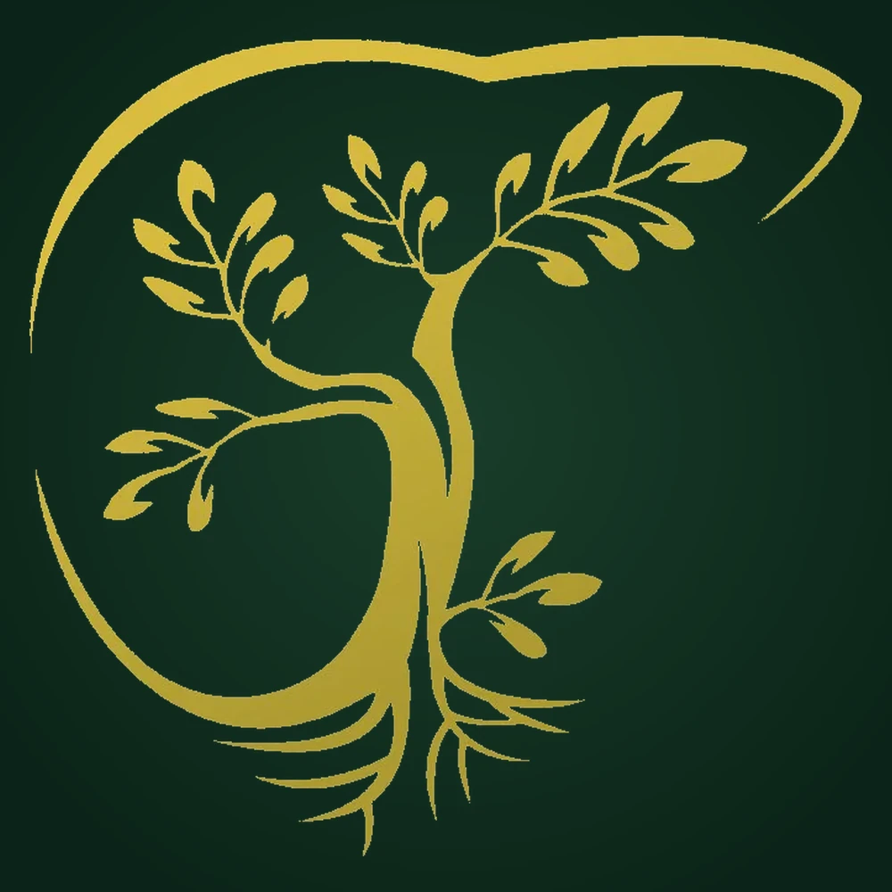

The biliary tree · drawn by one of our surgeons
The story in our logo
A tree of life, drawn from within.
Most people see a tree. Our surgeons see something else entirely.
Our logo is the biliary tree, the very real anatomical name for the branching network of bile ducts that carries bile from the liver and gallbladder. It is where so many of the cancers we fight begin. Designed by one of our founding surgeons, it transforms the anatomy we treat into a symbol of the life we protect.
-
1
The trunkThe common bile duct, the main channel, strong and central.
-
2
The branchesThe hepatic ducts, reaching into the liver like limbs into sky.
-
3
The leavesThe fine ductules, and every patient whose life continues to grow.
-
4
The rootsOur community of donors, surgeons and researchers, holding everything up.
“We took the anatomy that breaks our patients’ lives and turned it into the thing that gives them back.”